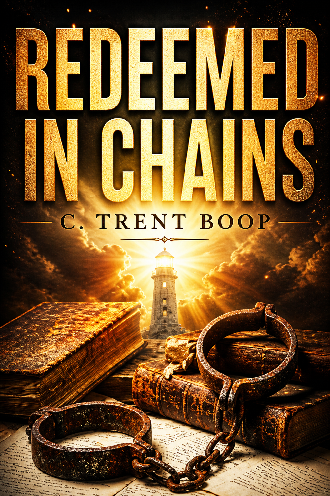

Bible study companion
Grace can reach a man even when consequence has closed the door.
A study and reference app for the biblical principles addressed in Redeemed in Chains, now grounded in the supplied final manuscript and built from a conservative, literal, evangelical Christian reading of Scripture.
Study modules
Trace the book's themes back to Scripture.
Each module keeps the Bible as the controlling authority, treats sin and grace plainly, and avoids sentimental redemption without repentance.
Manuscript map
Follow the story's movement from pressure to grace that stays.
Use the chapter map to connect discussion weeks to the actual narrative arc: clinic, collapse, court, prison, conversion, repair, and hope.
Reference library
Doctrinal anchors for discussion leaders.
Use this as a guardrail when turning the novel's scenes into Bible study: meaning comes from the text of Scripture, not from emotional impression.
Group plan
Build a discussion schedule.
Choose a study length and the app will arrange the doctrine modules into a group-ready rhythm.
Author notes
Make it specific to your manuscript.
Paste chapter summaries, key scenes, or discussion cautions here. The app stores this only in this browser with local storage.